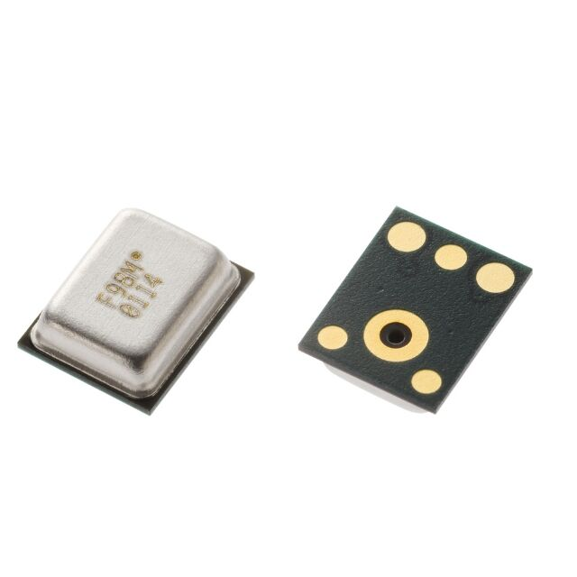
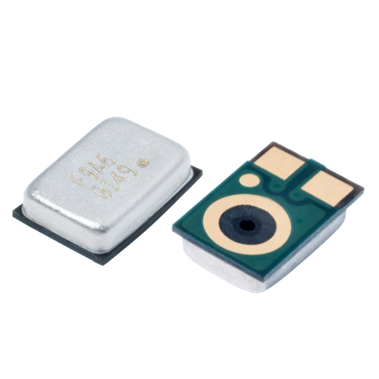
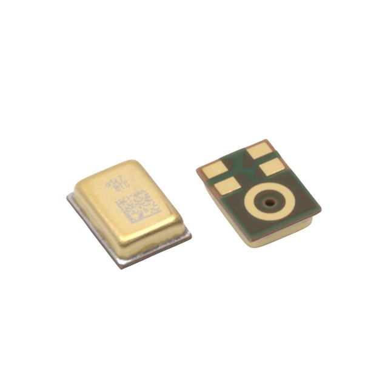
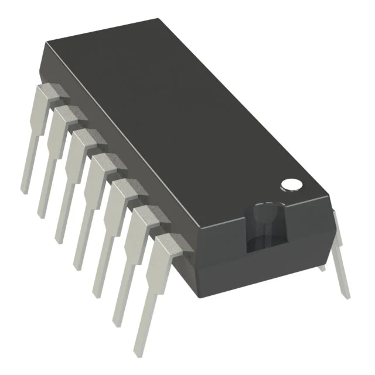
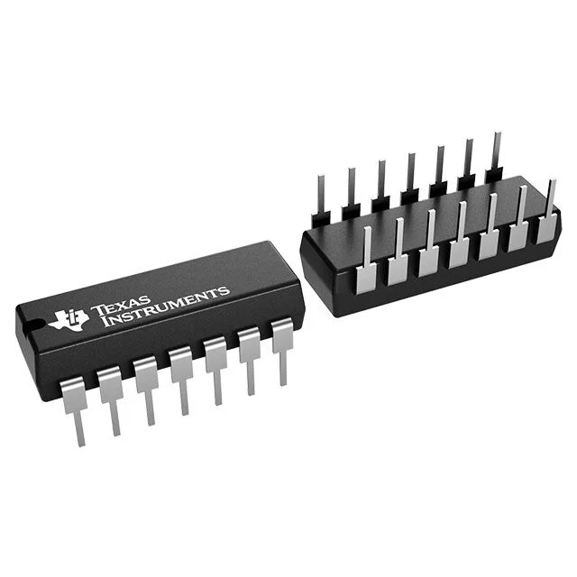
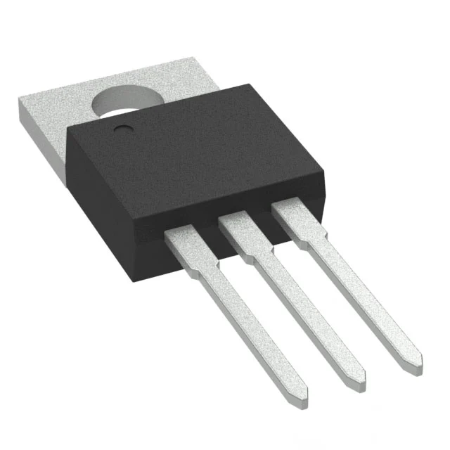
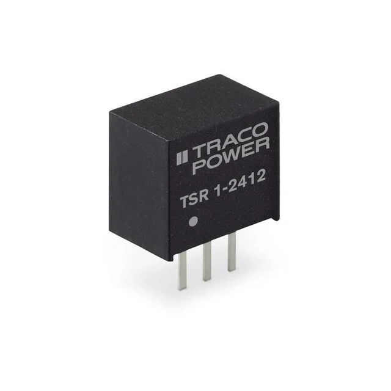

Component Selection — Microphone Subsystem
EGR 304 | Team 203 | Individual subsystem: Microphone
Introduction
The microphone subsystem detects sound for the team's interactive cat-toy project. An analog microphone feeds a signal-conditioning amplifier, which supplies the RA0 ADC input on the PIC18F57Q43 Curiosity Nano. The subsystem uses the team's planned 9 V input and regulated 5 V supply. Components were evaluated for analog interface compatibility, power consumption, PCB integration, cost, and audio performance. The microphone needs a separate lower-voltage supply; it cannot be connected directly to 5 V.
Design status: This is a researched draft for the initial component-selection submission. Prices are single-unit indicative prices and should be checked before ordering. The microphone choice is provisional until the schematic, PCB assembly method, and 3.3 V supply are confirmed. The power-source model has not yet been selected.
1. Microphone selection
Microphone / Acoustic Sensing
Table 1: Component selection comparison
| Solution | Pros | Cons |
|---|---|---|
 Option 1 — 3S 3SM121MZB1UA. Analog MEMS, 6-pin LGA; approximately $1.16 each (previous DigiKey quote). DigiKey product. Datasheet. |
66 dBA SNR • low 80 µA typical supply current • single-ended analog output simplifies signal conditioning • larger body than Option 2. |
1.6–3.6 V supply not compatible with direct 5 V • bottom acoustic port requires PCB opening and land-pattern care • LGA package is difficult to hand solder • additional regulated supply required. |
 Option 2 — 3S 3SM122KZB1VD-002-R. Analog MEMS, 4-pin LGA; approximately $1.06 each (previous DigiKey quote). DigiKey product. |
Very small 2.75 × 1.85 mm footprint • 80 µA typical supply current • simple single-ended analog output • omnidirectional detection. |
Lower 64 dBA SNR • 1.6–3.6 V supply requires a lower-voltage rail • especially small bottom-port LGA is hard to assemble manually • sensitive to acoustic-port contamination. |
 Option 3 — Syntiant SPH11C3LR5H-1. Differential analog MEMS, 5-pin LGA; approximately $2.12 each (previous DigiKey quote). DigiKey product. |
Best normal-mode SNR of the three (68.5 dBA) • differential output improves noise rejection over longer traces • wide audio frequency response • high acoustic overload tolerance. |
Higher current (~200–205 µA in normal mode) • differential output complicates interfacing with the current single-ended amplifier design • 2.4–3.2 V normal-mode supply • bottom-port LGA requires careful assembly. |
Choice (provisional): Option 1 — 3SM121MZB1UA.
Rationale: Option 1 balances low supply current and noise performance while retaining a single-ended analog output that can be conditioned by the MCP6004 and sampled by RA0. Compared with Option 2 it provides 2 dB better SNR for the same typical current, and it avoids the differential-output interface complexity of Option 3. It is not a drop-in part for the present 5 V rail: a suitable regulated 3.3 V microphone supply and correct bias/coupling network must be designed. The bottom-port LGA footprint and soldering process must also be confirmed before purchase.
Key electrical comparison:
| Characteristic | Option 1 | Option 2 | Option 3 (normal mode) |
|---|---|---|---|
| Supply voltage | 1.6–3.6 V | 1.6–3.6 V | 2.4–3.2 V |
| Typical current | 80 µA | 80 µA | 200–205 µA |
| Signal-to-noise ratio | 66 dBA | 64 dBA | 68.5 dBA |
| Sensitivity | −38 dBV/Pa | −38 dBV/Pa | −38 dBV/Pa |
| Output | Single-ended | Single-ended | Differential |
| Dimensions | 3.76 × 3.00 × 1.10 mm | 2.75 × 1.85 × 0.90 mm | 3.50 × 2.65 × 1.00 mm |
Datasheet evidence: Option 1, page 4; Option 2, page 4; Option 3, pages 2 and 6. The Syntiant microphone's 5 V absolute maximum rating is not its recommended operating voltage.
2. Operational amplifier / signal conditioning
Operational Amplifier / Signal Conditioning
Table 2: Component selection comparison
| Solution | Pros | Cons |
|---|---|---|
 Option 1 — Microchip MCP6004-I/P. Quad rail-to-rail op-amp, 14-PDIP; \(0.59–\)0.60 each. DigiKey product. |
Operates from 1.8–6 V, compatible with the 5 V rail • rail-to-rail input/output • four amplifier channels • low ~100 µA typical supply current per channel • matches existing block diagram. |
Four channels may be unnecessary • 1 MHz gain-bandwidth product limits very-high-frequency applications • 14-pin DIP uses more PCB area than small surface-mount options. |
 Option 2 — Microchip MCP6002-I/P. Dual rail-to-rail op-amp, 8-PDIP; \(0.44–\)0.45 each. DigiKey product. |
Same 1.8–6 V supply range • rail-to-rail output • smaller and less expensive if only one or two gain stages are required • low power consumption. |
Only two channels, limiting later filter/amplifier expansion • requires schematic/pinout changes from MCP6004 • 1 MHz bandwidth is not suited to high-frequency amplification. |
 Option 3 — Texas Instruments LM324AN. Quad general-purpose op-amp, 14-PDIP; $0.57 each. DigiKey product. |
Four channels • inexpensive • familiar and widely used architecture • operates from a single supply. |
Output is not rail-to-rail, reducing signal swing at 5 V • higher input bias current than MCP6004 • less suitable for signals approaching the positive supply rail. |
Choice: Option 1 — MCP6004 (package to be finalized for the PCB).
Rationale: The MCP6004 already appears in the individual block diagram and supports operation from the 5 V rail. Its rail-to-rail capability and low current consumption are attractive for conditioning a small microphone signal before the PIC ADC. Four channels leave room for additional gain and filtering stages. The through-hole MCP6004-I/P listed above is a comparison reference; choose the final footprint/package to match the actual PCB manufacturing plan.
Photo note: Images for op-amp options 2 and 3 are representative package photographs; verify the manufacturer marking against the linked product before purchasing.
3. Power regulation
5 V Voltage Regulator
The individual block diagram specifies a 9 V, 3 A unregulated source and 5 V, 1.5 A regulator. The chosen microphone also requires a separate voltage below 3.6 V. The project instructions call for a linear regulator; the following table compares 5 V regulator choices, and a separate 3.3 V candidate is noted below.
Table 3: Component selection comparison
| Solution | Pros | Cons |
|---|---|---|
 Option 1 — STMicroelectronics L7805CV. 5 V linear regulator, TO-220, nominal 1.5 A; about $1.08 each (verify current price). DigiKey product. |
Meets the 5 V / 1.5 A nominal target • straightforward linear regulator design • through-hole package is easy to prototype • built-in thermal protection. |
At 9 V input, heat loss is (9−5) × load current • 6 W dissipation at 1.5 A would require thermal design • does not directly provide the microphone's 3.3 V. |
 Option 2 — Traco Power TSR 1-2450. 5 V switching regulator, 1 A maximum; $6.28 each (DigiKey screenshot, October 2026). DigiKey product. |
Much lower heat dissipation than a linear regulator • wide 6.5–36 V input range • convenient 3-pin SIP replacement form factor. |
Only 1 A, below the 1.5 A block-diagram specification • higher unit cost • switching noise may need filtering for sensitive analog audio. |
Choice (provisional): Option 1 — L7805CV.
Rationale: It meets the stated nominal 5 V, 1.5 A target and provides a simple linear solution. The 1.5 A rating does not mean 1.5 A is available without thermal design. At a full 1.5 A load from 9 V, estimated dissipation would be 6 W, requiring substantial heat management. The actual microphone-board current is expected to be far lower, but must be calculated from final components.
Additional microphone rail: An STMicroelectronics LD1117V33 3.3 V linear regulator (800 mA nominal, DigiKey product, approximately $1.27) is a possible way to provide the lower-voltage microphone supply. Do not finalize this part until the power architecture and regulator input/output capacitor requirements are checked. A 3.3 V rail works for Options 1 and 2, but exceeds Option 3's 3.2 V normal-mode maximum.
Photo note: DigiKey displays a representative TSR-series photo marked TSR 1-2412 on its TSR 1-2450 product listing. The photo represents the package only; the linked product and specified 5 V output are the actual comparison item. Option 1 also uses a representative TO-220 package photograph.
4. Interface and power considerations
- Signal path: Analog MEMS microphone → MCP6004 conditioning → PIC18F57Q43 RA0 (ADC1).
- Microphone power: 3.3 V for the provisional 3S microphone, not 5 V.
- Amplifier power: 5 V nominal, subject to final schematic verification.
- Power budget: Include the PIC, microphone, op-amp, regulator quiescent currents, and any other powered devices actually on this subsystem; include a 25% current margin per rail.
- Manufacturing: Bottom-port microphones require a PCB acoustic opening and footprint based on the manufacturer's land pattern. Confirm the class PCB process supports these small LGA parts.
- Design conflict to resolve: Product requirements specify rechargeable power and charging during operation, whereas the block diagram currently shows an unregulated 9 V supply.
Conclusion
The provisional microphone choice is 3SM121MZB1UA for its 66 dBA SNR, 80 µA typical current, and straightforward single-ended output. The MCP6004 is the preferred amplifier because it supports 5 V operation and is already included in the individual block diagram. A L7805CV is a preliminary 5 V regulator candidate, but the final design must address regulator heating and add a compatible low-voltage microphone rail. Final PCB footprint confirmation and the 3.3 V microphone rail remain open engineering decisions.
References
- Solid State System, 3SM121MZB1UA MEMS Microphone IC Datasheet, version 2.1, April 2023.
- Solid State System, 3SM122KZB1VD-002-R MEMS Microphone IC Datasheet, version 1.3, April 2023.
- Syntiant, SPH11C3LR5H-1 FALCON Datasheet, revision A-1, November 2024.
- DigiKey product listings linked in the component comparison tables (pricing should be rechecked before ordering).
- EGR 304, Individual — Component Selection assignment instructions.
Formatting note: Tables use the instructor’s Style 1 layout. Some images are representative package photos rather than exact part markings.
Submission checklist: Publish this Markdown page and its docs/image assets to your individual GitHub datasheet; link the page from the landing page; export the rendered page as a PDF; submit the working URL and PDF to Canvas. A Power Budget placeholder page is included in the ZIP.